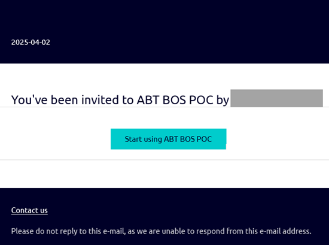
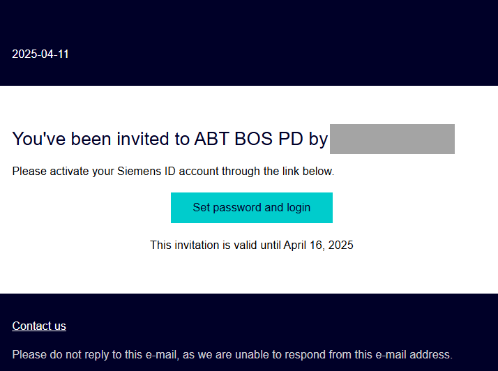
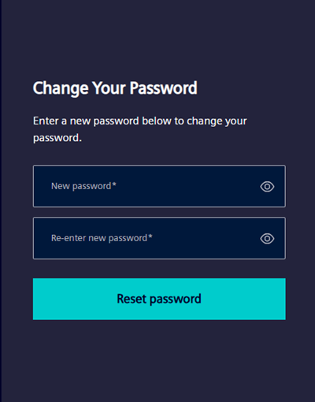

Set up an user account
Siemens users and external users receive an email to set up the BOS account.
Setting up an account - Method 1 (Siemens users)
- You receive an invitation email to set up BOS account.
- Go to the email and click Start using ABT BOS POC.

- An external link https://sp.login.siemens.com/ opens.
- Click Log In.
- The Log in window displays.

- Enter your email address and password to finish setting up the account.
- The Siemens user account is set up on Siemens portal.
Setting up an account - Method 2 (external users)
- You receive an invitation email to set up a BOS account.
- Go to the email and click Set password and login.

- An external link opens in a new tab.
- Enter a new password in the New password and Re-enter password fields and click Reset password.
For password reset, see Password recovery workflow (external users). 
- An external link https://sp.login.siemens.com/ opens.
- Click Log In.
- The Log in window displays.
- Enter your email address and password to finish setting up the account.
- The Siemens user account is set up on Siemens portal.